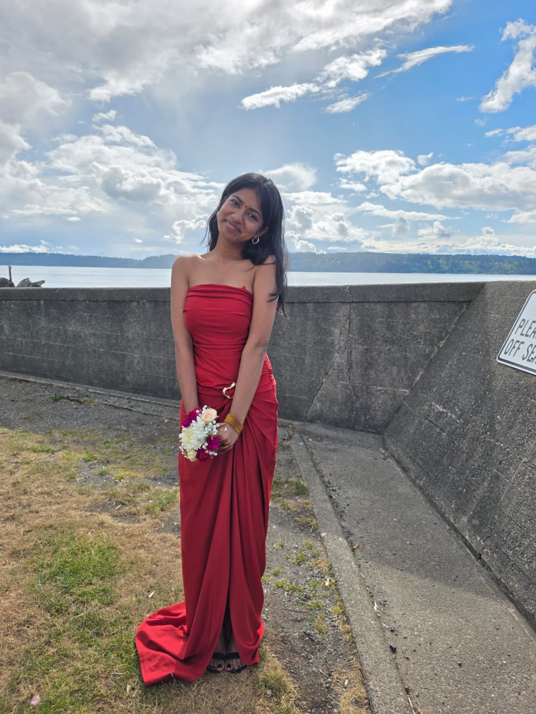

About
Getting to know me
Where I come from, what drives me, and where I'm headed.
I'm a Sociology student at the University of Washington, Seattle, exploring how social systems shape access to education and health.
My work centers on underserved communities, literacy access, and health equity — the throughline connecting my volunteering, leadership, and academic interests. I've seen how much of a person's health is decided long before they reach a clinic, and I want to practice medicine that takes those realities seriously.
I remain open to specialization and am focused, for now, on building a systems-level understanding of healthcare: why access is uneven, how communities are affected, and where a physician can meaningfully intervene.

At a glance
- University
- University of Washington, Seattle
- Major
- Sociology
- Focus areas
- Health equity · Literacy access · Underserved communities
- Career goal
- Physician (specialization open)
- Certifications
- CPR · Stop the Bleed · NAC (in progress)
My journey
A few milestones along the way.